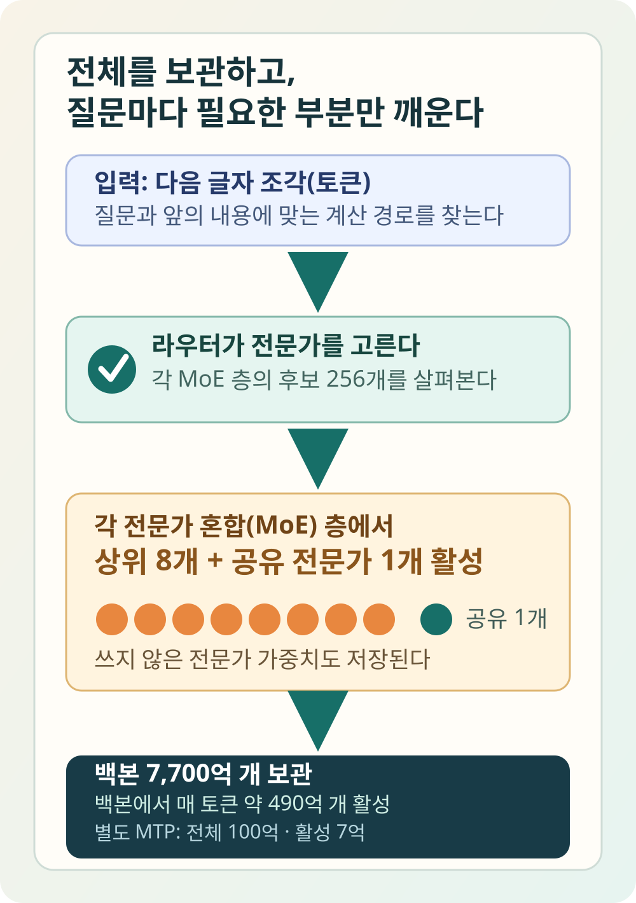
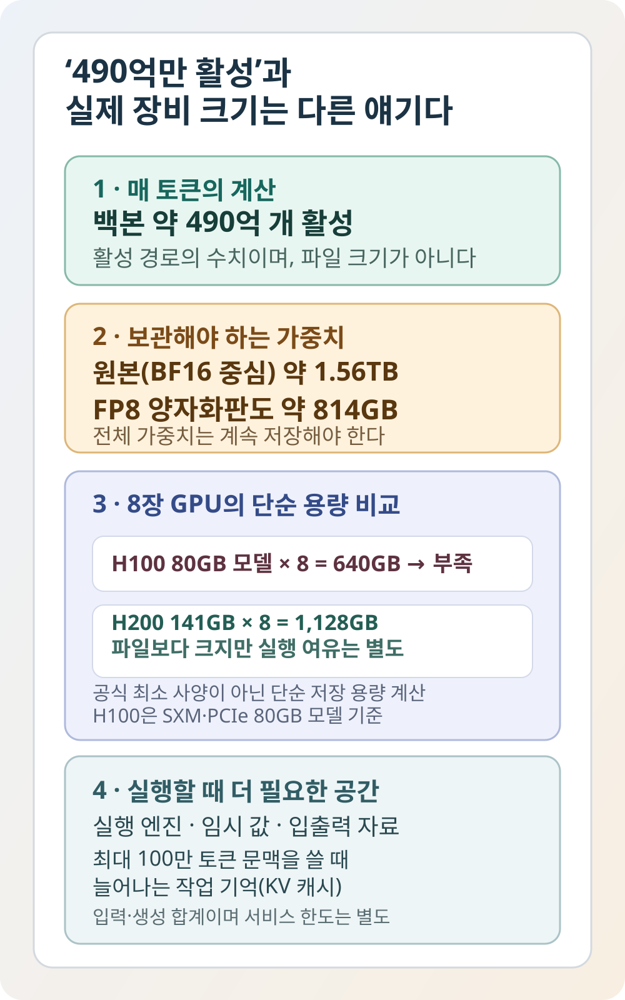

텐센트, 백본 7,700억 개 ‘Hy4 preview’ 공개…토큰마다 약 490억 개 활성
중국 인터넷 기업 텐센트가 새 AI 모델 ‘Hy4 preview’를 공개했다. AI의 중심부인 백본은 파라미터 약 7,700억 개이고, 답을 한 조각씩 만들 때 약 490억 개가 활성화된다. 속도를 높이는 별도 MTP 층까지 합친 전체 체크포인트는 약 7,800억 개다.
텐센트는 8월 28일 Hy4 preview 공개를 발표했다. GitHub에는 구조 설명과 배포·미세조정 안내를, Hugging Face에는 실제 가중치를 공개했다. 개발자가 파일을 내려받아 자신의 서버에서 시험할 수 있는 ‘공개 가중치’ 모델이 된 것이다.
파라미터는 AI가 학습하며 조정한 수많은 숫자다. 답을 만드는 규칙과 학습한 패턴이 이 숫자들에 담긴다. 7,700억 개는 주요 백본의 전체 규모이고, 별도 MTP 층 100억 개를 합치면 공개 체크포인트는 약 7,800억 개다.
약 490억 개는 다른 숫자다. AI가 다음 글자 조각을 예측할 때 백본에서 활성화되는 양을 뜻한다. 백본 기준으로 전체의 약 6.4%다. MTP 층을 사용할 때는 그 층에서도 약 7억 개가 별도로 활성화된다.
쉽게 말하면 7,700명의 전문가가 있는 회사가 일이 들어올 때마다 관련 직원 약 490명만 회의에 부르는 방식과 비슷하다. 모든 직원을 매번 부르지 않으니 계산은 줄어든다. 그런데 쉬고 있는 직원의 사무실과 자료까지 없어지는 것은 아니다.

7,700억과 490억은 둘 다 맞다
이 구조의 정확한 이름은 ‘전문가 혼합’이다. 영어로는 Mixture of Experts, 줄여서 MoE라고 부른다. Hy4의 77개 MoE 층은 각각 선택 대상 전문가 256개와 항상 쓰는 공유 전문가 1개를 가진다.
글자 조각 하나를 처리할 때마다 이 층에서 상위 8개와 공유 전문가가 활성화된다. 첫 층은 모든 입력에 같은 계산을 하는 밀집형 층이고, 나머지 층에서 이 선택이 반복된다.
모델 카드에는 투기적 디코딩으로 속도를 높이는 별도 MTP 예측 층도 적혀 있다. 이 층은 전체 100억 개, 활성 7억 개 규모다. 따라서 7,700억·490억은 주요 백본의 숫자고, Hugging Face 체크포인트가 약 7,800억 개로 표시되는 것도 모순이 아니다.
긴 자료를 읽는 용량도 커졌다. 공식 설정의 최대 문맥 창은 1,048,576토큰이다. 이는 보통 입력과 생성분을 합친 한도이며, 실제 최대 입력·출력은 제공 서비스 설정에 따라 더 작을 수 있다. 토큰은 AI가 읽고 쓰는 글의 조각이다.
문맥 창이 100만 토큰이라고 그 안의 내용을 전부 같은 정확도로 기억한다는 뜻은 아니다. 문맥 창은 큰 가방의 크기를 말할 뿐, 가방 속 물건을 다시 정확히 찾는 능력까지 보장하지는 않는다. 텐센트는 필요한 구간을 골라 보는 희소 주의 구조를 써서 이 부담을 줄였다고 설명한다.
가중치는 Apache 2.0 라이선스로 공개됐다. 사용·수정·배포와 상업적 이용을 넓게 허용하는 편이다. 다만 배포할 때는 라이선스와 저작권 고지를 유지해야 하고, 텐센트의 상표를 마음대로 쓸 권리나 제품 보증까지 받는 것은 아니다.
‘공개’의 범위도 구분할 필요가 있다. 가중치와 배포·미세조정 안내 및 관련 스크립트는 볼 수 있지만, 독립적인 추론 엔진 전체나 학습에 쓴 모든 데이터와 과정이 함께 공개된 것은 아니다. 다른 팀이 완전히 같은 모델을 처음부터 재현할 수 있다는 뜻과는 다르다.
성능표는 텐센트의 자체 평가부터 분리해 읽어야 한다
이 모델이 중요한 이유는 중국 AI 경쟁이 단순히 덩치를 키우는 단계를 넘었기 때문이다. 더 많은 능력을 담으면서도 요청 한 번에 쓰는 계산량을 얼마나 줄일 수 있는지가 경쟁력이 됐다.
텐센트는 사내 소프트웨어·게임·금융·보안 전문가들이 실제로 맡는 일을 중심으로 학습 데이터를 설계했다고 밝혔다. 전문가의 업무 문서 원문을 그대로 학습했다는 뜻은 아니다. 코딩, 여러 파일이 섞인 사무 분석, 게임 시제품 제작, 과학 문제 풀이를 주요 용도로 제시했다.
가장 사람다운 평가는 텐센트 내부에서 진행됐다. 내부 전문가 163명이 엔지니어링 과제 203개에서 답을 어느 모델이 만들었는지 모르는 상태로 비교했다. Hy4의 평균은 4점 만점에 2.99점이었다.
같은 평가에서 GLM 5.3은 2.92점, Kimi K3는 2.94점이었다. Hy4는 GLM 5.3과의 비교에서 46.8%를 이기고 40.4%를 졌으며, Kimi K3과의 비교에서는 51.2%를 이기고 40.9%를 졌다. ‘압도적으로 앞섰다’보다 ‘내부 테스트에서 조금 앞섰다’가 정확한 표현이다.
이 결과는 텐센트 내부의 엔지니어링 과제 203개를 내부 전문가 163명이 평가한 숫자다. 기사 작성 시점에는 같은 평가를 제3의 기관이 독립적으로 반복한 자료가 확인되지 않았다. Reddit 초기 토론의 한 댓글은 공식 표에서 DeepSWE·CyberGym 등 일부 지표가 GLM 5.3보다 낮다고 지적했다. 이는 독립 성능 검증이 아니라 초기 반응으로만 읽어야 한다.
텐센트도 이를 완성판으로 설명하지 않는다. preview라는 이름의 초기 버전이며, 공식 모델 카드에는 복잡한 일을 필요보다 오래 추론하고 자신의 결과를 과도하게 재확인하는 경향이 알려진 문제로 적혀 있다.
이번 공개가 전날과 비교해 바꾼 점은 개발자가 텐센트의 설명만 듣지 않아도 된다는 것이다. 가중치와 배포 방법, 미세조정용 스크립트가 공개됐기 때문에 실제 업무 질문을 넣고, 어떤 장비에서 얼마나 빠르게 답하는지 직접 확인할 수 있게 됐다. 추론 실행 자체는 공식 안내처럼 vLLM이나 SGLang 같은 외부 엔진을 사용한다.
공개 가중치의 가치는 성능표보다 선택권에 있다. 회사 자료를 외부 서비스로 보내기 어려운 팀은 자체 서버 안에서 모델을 시험할 수 있고, 개발자는 특정 업무에 맞게 작동 방식을 조정할 수 있다. 반대로 장비 운영과 보안 책임도 함께 가져온다.
전문가 혼합 구조가 계산을 공짜로 만드는 것은 아니다. 질문이 들어올 때 어느 전문가를 부를지 고르는 과정이 필요하고, 선택된 부분이 여러 GPU에 흩어져 있으면 장비끼리 데이터를 빠르게 주고받아야 한다. 연결 속도가 느리면 계산량을 줄인 이점이 대기 시간에 가려질 수 있다.
그래서 활성 파라미터 490억 개만 보고 일반적인 490억 개 모델과 속도를 같다고 예상하면 안 된다. Hy4는 매 순간 일부만 계산하지만, 거대한 전체 모델에서 필요한 부분을 찾고 여러 장비 사이로 옮기는 일이 추가된다. 실제 속도는 서버 구성과 실행 프로그램에 크게 달라진다.
텐센트가 공개한 자료에는 다양한 지식·코딩 시험 점수가 있지만, 모든 사용자가 가장 궁금해할 응답 시간과 서버 한 대가 동시에 처리할 수 있는 요청 수는 같은 조건으로 비교돼 있지 않다. 모델 성능과 서비스 운영 효율은 따로 시험해야 한다.
한국어 품질도 아직 빈칸에 가깝다. 중국어와 영어에서 높은 점수가 나와도 한국어 높임말, 숫자 단위, 법률 문장, 국내 서비스 이름을 정확히 다룬다는 보장은 없다. 한국 사용자는 번역된 공개 점수보다 자신의 질문으로 오류율을 재는 편이 안전하다.
100만 토큰 문맥도 같은 방식으로 확인해야 한다. 긴 보고서 여러 권을 한 번에 넣을 수 있다는 것과 그 안의 작은 조건을 끝까지 정확히 찾아낸다는 것은 다른 능력이다. 문서 앞·중간·끝에 정답 근거를 나눠 놓고 빠뜨리는 부분이 있는지 보는 시험이 필요하다.
기업 자료를 넣을 때는 공개 가중치라는 이유만으로 안심해서도 안 된다. 누가 모델 서버에 접속할 수 있는지, 질문 기록을 얼마나 보관하는지, 생성된 코드가 외부로 나가는지까지 운영 환경에서 정해야 한다. 모델 파일의 공개 여부와 회사 데이터의 안전은 별개의 문제다.
Hy4가 정말 실용적인지는 앞으로 독립 평가에서 갈릴 것이다. 같은 장비, 같은 입력 길이, 같은 정확도 기준으로 다른 모델과 비교한 속도와 비용이 필요하다. 지금 확인된 것은 텐센트가 큰 공개 모델을 내놨다는 사실이고, 모든 업무에서 더 낫다는 결론은 아니다.

약 490억만 쓴다고 소형 모델은 아니다
개인용 컴퓨터에서 모델 일부를 일반 메모리나 저장장치로 넘겨 억지로 실행하는 방법은 있어도, 답을 만드는 속도는 크게 떨어질 수 있다. ‘한 번 실행된다’는 말과 여러 사람이 기다리지 않고 쓸 수 있다는 말은 다르다. 실제 도입비에는 GPU뿐 아니라 전력, 장비 연결과 운영 인력도 들어간다.
가장 큰 오해는 ‘490억 활성’을 ‘490억짜리 파일’로 읽는 것이다. Hugging Face의 실제 파일 목록을 보면 BF16 중심 원본 체크포인트 저장소는 약 1.56TB다. 대부분의 가중치를 FP8로 양자화한 판도 약 814GB에 달한다.
텐센트의 공식 배포 예제는 FP8 모델을 GPU 8장으로 나누는 설정을 사용한다. 그런데 GPU 기종과 최소 메모리를 명시하지는 않았다. H100 SXM·PCIe의 80GB 모델 8장은 합계 640GB다. FP8 텐서 자체가 약 813.25GB이므로 다른 메모리로 일부를 넘기지 않고는 전체 가중치를 올릴 수 없다.
141GB H200 8장은 합계 1,128GB라서 파일 크기를 넘는다. 그래도 바로 ‘충분하다’고 단정할 수는 없다. 실행 엔진, 중간 계산값, 입출력 자료, 긴 문맥을 보관하는 작업 기억에도 GPU 메모리가 필요하다.
특히 입력과 생성분을 합친 문맥을 최대 1,048,576토큰에 가깝게 사용하면 저장된 가중치 밖의 부담이 커진다. 어디까지 처리했는지 기억하는 KV 캐시와 임시 값이 필요하기 때문이다. 문맥 상한과 실제로 감당할 수 있는 동시 요청 수는 별도의 숫자다.
직접 서버를 구축하지 않아도 쓸 수는 있다. 界面新闻과 新浪科技는 Hy4 preview가 텐센트의 WorkBuddy·CodeBuddy·위안바오·ima에서 동시에 제공됐고, Tencent Cloud TokenHub와 OpenRouter를 통해 API로도 접근할 수 있다고 보도했다.
보도된 텐센트 클라우드 가격은 100만 토큰당 입력 6위안, 출력 18위안, 캐시에 있는 입력은 0.3위안이다. 이는 자체 서버 비용이 아니라 텐센트가 운영하는 API 가격이다. 국가·제공자·할인에 따라 달라질 수 있으므로 실제 결제 전에는 최신 가격표를 다시 봐야 한다.
한국 사용자에게는 모델 소유보다 테스트 방식이 먼저다
일반 사용자는 7,700억 개를 직접 다운로드할 필요가 거의 없다. API나 텐센트 제품에서 같은 질문을 다른 모델에도 물어보고, 한국어 정확도와 답이 오는 시간을 비교하는 편이 훨씬 현실적이다.
개발자는 공개 가중치의 장점을 살릴 수 있다. 데이터를 외부 API에 보내지 않고 자체 환경에 모델을 둔다거나, 특정 업무에 맞게 조정할 수 있다. 그 대신 장비·속도·장애 복구와 보안 패치를 직접 책임져야 한다.
한국 기업은 성능표보다 자사 업무 50~100개를 먼저 준비하는 것이 낫다. 긴 계약서에서 조항 찾기, 여러 파일의 숫자 맞추기, 기존 코드에 작은 오류 고치기처럼 정답과 실패를 판정할 수 있는 일이 좋다.
그 테스트에서는 첫 답의 점수만 재지 않는다. 작업을 끝낼 때까지 걸린 시간, 재시도 횟수, 사람이 고친 부분, 결과 하나당 총비용을 함께 봐야 한다. 필요보다 오래 추론하고 자기 답을 계속 재확인하는 Hy4의 알려진 한계도 이 숫자에서 드러난다.
Hy4 preview의 핵심은 ‘작은 AI’가 아니다. 거대한 백본과 별도 MTP 층을 보관하되, 토큰마다 필요한 계산 경로만 활성화하는 기술이다. 중국 AI 경쟁이 덩치뿐 아니라 큰 모델을 얼마나 현실적으로 운영하느냐로 옮겨 가고 있다는 신호다.
더 읽을 자료
- Tencent Hy Team — Hy4 preview 공식 GitHub과 모델 설명
- Hugging Face — Hy4 preview 모델 카드와 원본 가중치
- Hugging Face — Hy4 preview FP8 압축 가중치
- Tencent — Apache License 2.0 전문
- 界面新闻 — Hy4 preview 공개·제품 적용·API 가격 보도
- 新浪科技 — Hy4 preview 공개와 내부 맹검 보도
- 信報 — Hy4 preview 출시·접근 방식 보도
- NVIDIA — H100 GPU 메모리 명세
- NVIDIA — H200 포함 데이터센터 GPU 메모리 명세